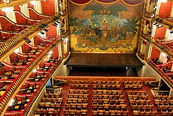

Durante o ciclo da borracha o Pará se encontrava em um crescimento econÔmico tão grande que chegava chamava a atenção de todo o Brasil e mundo afora, mas em meio a todo esse crescimento o estado se encontrava sem muitas atrações,e nem sequer possuia um espaço apropriado para apreciar a sexta arte.Então,para atrair ainda mais a atenção do público,foi então criado,em 15 de fevereiro de 1878,o primeiro e até hoje maior teatro da região Norte,o Theatro da paz (usar o "H" era comum na ortografia da época,como em pharmácia e theatro),convidando,desde sua inauguração artistas vindos de diversos paises como Itália,França e Portugal,para mostrar o quanto a Belle Époque estava sendo abundante e Belém realmente era umas das cidades mais ricas do planeta.
Arquitetura
O espaço é repleto de colunas e entradas por fora,por dentro o salão principal possui o formato tradicional italiano de ferradura,podendo conter 880 pessoas,e ao redor,ainda por dentro,possui salões,corredores,lustres,piso em mosaico de madeiras nobres,várias esculturas,escadarias e outras peças,algumas revestidas em folha de ouro,o Theatro é uma combinação de elementos que juntos formam uma paisagem luxuosa e arquitetura fora do normal.
